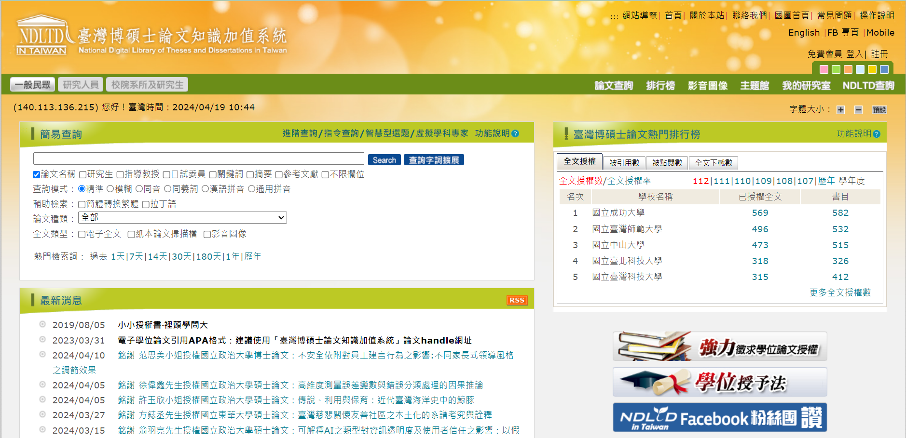
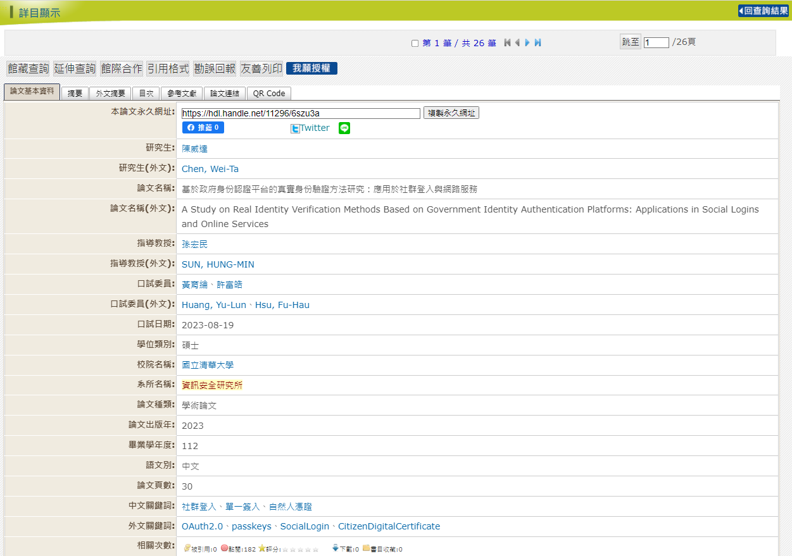
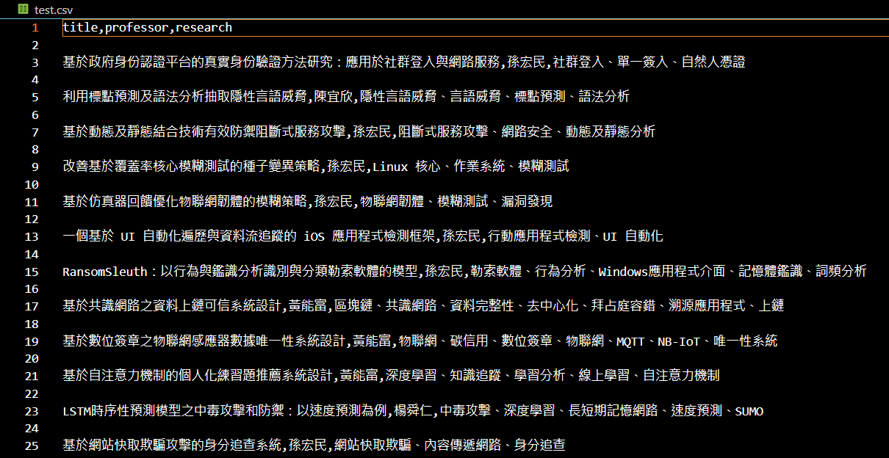
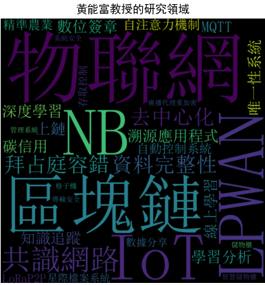

專案(一):清大資安所教授研究領域分析
主題與動機:
當初我即將入學清大資安所。對於研究生而言，最重要的事情就是找指導教授。
而學生通常會依據教授的專長作為選擇實驗室的依據，因此我想進行清大資安所教授的研究領域分析。
目標規劃:
將清大資安所教授的研究領域透過文字雲的方式呈現。
實作流程:
Step1:利用Selenium套件爬取台灣碩博士論文網的內容

- 爬取網址:台灣碩博士論文網
- 點選進階查詢，欄位分別輸入"清大"與"資訊安全研究所"
- 點選進第一篇碩士論文
- 目標共有二十六篇論文，因此利用Selenium自動化進行多頁網路爬蟲
Step2:利用BeautifulSoup套件從中擷取三大關鍵資訊:1.論文名稱2.指導教授3.研究領域

預期擷取的資訊為:(已此頁面為例)
- 論文名稱:基於政府身份認證平台的真實身份驗證方法研究:應用於社群登入與網路服務
- 指導教授:孫宏民
- 研究領域:社群登入、單一簽入、自然人憑證
Step3:利用csv套件寫入與讀取csv檔案進行儲存

Step4:讀取csv檔案，利用wordcloud套件進行文字雲製作

- 讀取CSV檔案並以指導教授(professor)為依據分類
- 提取各個指導教授的中文關鍵詞(research)
- 利用wordcloud文字雲套件，將教授與其研究領域之關聯製作成文字雲的圖表呈現